畫之始 Painting Origin
線條與觀看剛開始生成的痕跡 The first traces of lines and seeing.
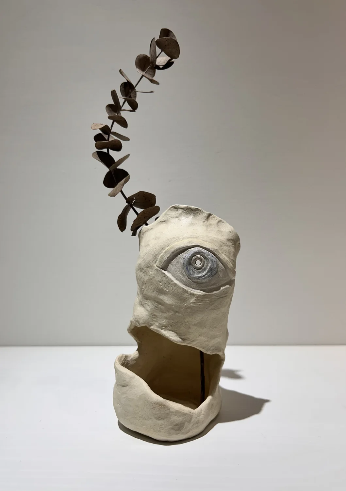
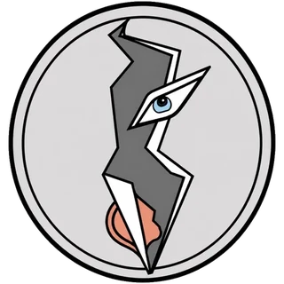
那些尚未成形的生命，
在看見與想像之間，
逐漸顯現。
Unformed lives gradually emerge
between seeing and imagination.
鄭又禎 Yuzen Cheng
00 / 名字的由來 The Meaning of Yuzen Universe
在視與不視之間，生成自己的宇宙。 Generating my own universe between seeing and imagining.
Yuzen，源自創作者「又禎」的名字，也在聲音與意象中，隱約呼應「幽禪」與「悠然」——幽遠、靜謐而自由。
Universe，不只是宇宙，更是一個讓生命在觀看、想像與雙手之間，持續生成、逐漸顯現的世界。
Yuzen Universe，是又禎的宇宙，也是生命得以一次又一次重新開始的地方。
01 / 關於又禎 About Yuzen
我的創作並非單純再現眼前事物，而是來自於我與世界之間流動的感知關係。石紋、木紋、裂縫、風景與時間留下的痕跡，逐漸成為我走進又禎宇宙的起點。 My work does not simply reproduce what stands before me. It grows from a shifting relationship of perception between the world and myself. Stone patterns, wood grain, cracks, landscapes, and traces left by time gradually became the path through which I entered Yuzen Universe.
在觀看、觸摸與想像交會之後，這些尚未成形的生命線索，透過陶土、線條與不同媒材慢慢顯現。每一件作品，都像一個仍在形成的小宇宙。 After seeing, touch, and imagination meet, these still-unformed traces of life slowly emerge through clay, line, and other materials. Each work becomes a small universe still in formation.
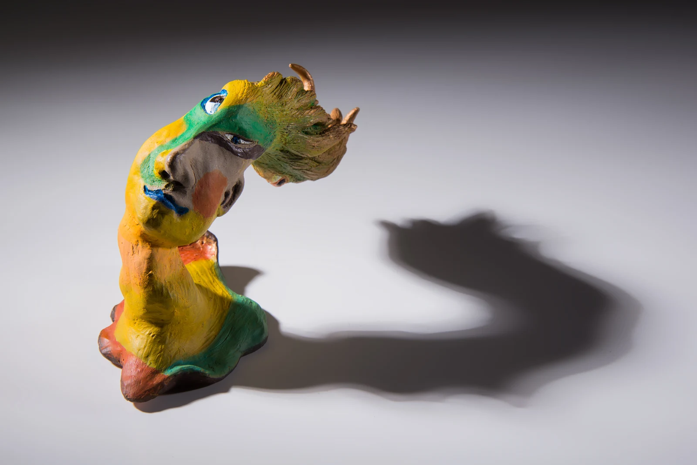
創作起點 Beginning
第一個從陶土中甦醒的樹精昂首而立，像自然靈魂初次現身，也開啟了 Yuzen Universe 的生命語彙。
Tree Spirit's Pride The first spirit awakening from clay stands with its head lifted, marking the beginning of Yuzen Universe and its living language of eyes, faces, nature, and soul.
創作者 Artist
我的創作發生在「視與不視之間」。
以世界留下的痕跡作為起點，
在看見與想像之間，
讓尚未存在的生命逐漸生成。
My work happens Between Seeing and Imagining. Beginning from the traces the world has left, at the meeting of what the eye sees and what the mind imagines, I let lives not yet formed gradually emerge.
鄭又禎，國立清華大學藝術與設計學系碩士（設計組，2023），論文《視與不視之間—鄭又禎插畫立體化陶藝創作論述》。一九九三年創立知益有限公司，至今為創辦人暨藝術總監，從事室內設計三十餘年；一九九五年創辦「雅群藝術設計空間」、二〇〇九年創辦「Q藝術空間」兩處畫廊。 Yuzen Cheng holds a master's degree from the Department of Arts and Design (Design Division), National Tsing Hua University (2023); Master's thesis: Between Seeing and Imaginary. She founded ZEAL Interior Design Co., Ltd. in 1993 and remains its Founder and Art Director, with more than thirty years in interior design. She also founded two galleries: Yaqun Art & Design Space in 1995 and Q Art Space in 2009.
二〇一八年起投入木雕，二〇一九年開始陶塑創作，自此陶土成為她最主要的創作語言。二〇二三年起於新竹縣立自強國民中學擔任視覺藝術老師。 She took up wood carving in 2018 and began working in clay in 2019, after which clay became her principal language. Since 2023 she has taught visual arts at Hsin Chu County Tzu Chiang Junior High School.
近年以「Yuzen Universe」為創作主軸，透過裂縫、殘片、石紋與人格生成，探索萬物有靈與生命顯影的可能。 In recent years, Yuzen Universe has become her central creative world, exploring cracks, fragments, stone textures, and generated personhood as ways for animism and hidden life to appear.
02 / 創作理念 Creative Concept
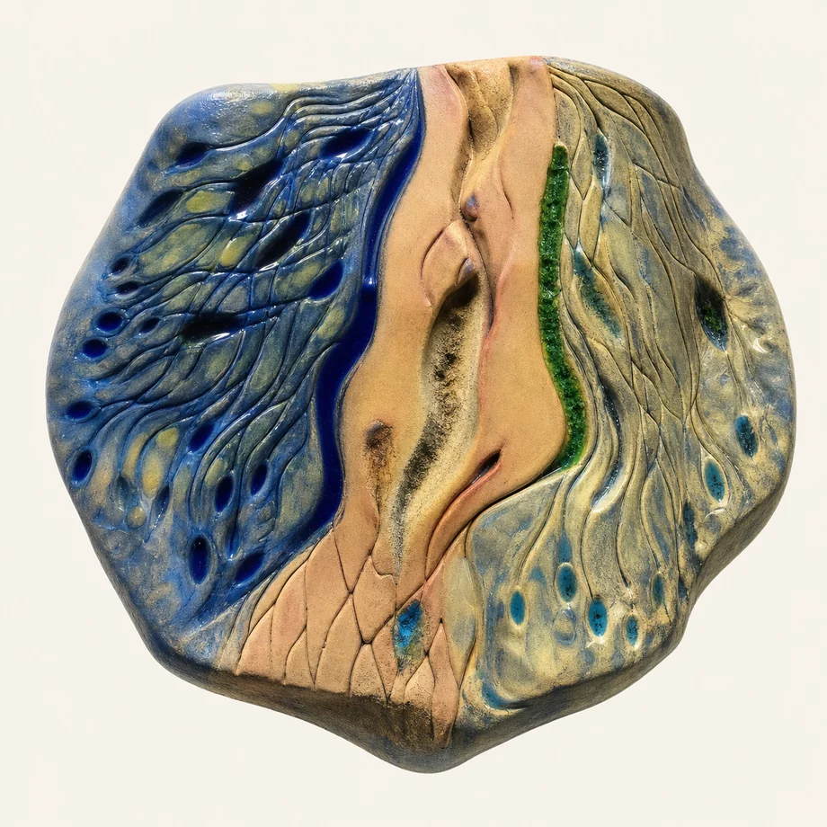
我的創作觀是「視與不視之間」。 My way of working is what I call Between Seeing and Imagining.
「視」是眼睛所見。隨處可見的斑駁牆面、老樹枝幹、一張風景照片，都會讓我聯想到各式各樣「類精靈」的臉。牠們有時成群結隊地對話，有時堆疊在一起玩樂，臉上帶著微笑，充滿歡樂。凝視著這些翩翩起舞的類精靈時，我彷彿看見內心的自我，也隨之起舞，開心無比。 Seeing is what the eye takes in. A mottled wall, the branches of an old tree, a photograph of a landscape—things anyone passes in a day—set off an association in me, and I find in them the faces of all kinds of sprite-like beings. Sometimes they gather in groups and talk; sometimes they pile up together, playing. They wear smiles, full of joy. When I watch them dancing, I seem to see my inner self step in and dance with them.
「不視」是心眼所見，想像無限。天馬行空的夢境與想像，如放映機中的畫面，一幕幕浮現在眼前，成為我創作的泉源。即使是由想像構成、現實中未曾見過的形象，也可以先用線稿描繪，再用陶土捏塑成形，彷彿各種不同造形的時空旅者群聚，也成為幻想中無限的「自我」。 Imagining is what the mind’s eye sees, where imagination has no limit. Dreams and inventions run before me like images in a projector, frame after frame, and they are the wellspring of my work. Even a figure made purely of imagination, never seen in the world, can first be drawn in line and then shaped in clay—a crowd of time travellers in every imaginable form, each another endless version of the self.
「視與不視之間」，是眼睛所見與內心所想融合之後的發酵。看見有感覺的圖像或情境，再加上延伸的想像，經過重新排列、組合與再製，形成我的「視覺聯想」。隨著時間推移，想法如水波般不斷改變，形成許多分歧，也形成多變而獨一無二的作品。 Between seeing and imagining is what ferments once the two fuse. An image or a situation moves me; I extend it with imagination, then rearrange, recombine, and remake it—this is my visual association. And because thought keeps changing like water, never settling, the same beginning branches out, and the works that come of it are varied and never twice the same.
創作時，我讓思想放空，運用直覺，捕捉瞬間的靈感。在較早的創作中，我常把周遭出現的類臉譜圖案擷取成插畫，再用陶土捏塑成形，將插畫立體化為陶藝作品。陶土是我最主要的創作語言，因為它的可塑性強，可以迅速表現出生靈的樣貌。經過彩繪與高溫窯燒之後，常有意外的驚喜出現。 When I work, I empty my thinking, rely on intuition, and catch the inspiration of an instant. In my earlier work I often took the face-like patterns I found around me, drew them as illustrations, then shaped them in clay—turning illustration into three dimensions. Clay is my main language, because its plasticity can give a living form its appearance quickly. After painting and a high-temperature firing, the kiln often holds a surprise.
隨著創作持續，我也逐漸不預設陶塑的形體：讓雙手先行，形體後現。我刻意讓作品沒有唯一的正面，邀請觀者繞行一圈，在轉換角度時遇見不同的生命。 As the work went on, I gradually stopped deciding the form in advance: the hands go first, the form arrives after. I deliberately give a piece no single front, so that a viewer has to walk around it and meet a different life at every angle.
我相信世界本來就是活的。我所說的「活」，是世界始終蘊含著尚未被看見的生命生成可能。那些紋理、痕跡與形體，經由觀看、想像與雙手的工作，逐漸顯現出生命。我不是記錄它，也不是創造它；而我，也是這個生成過程的參與者。 I believe the world has always been alive. By “alive” I mean that the world holds, always, possibilities for life that have not yet been seen. Those textures, traces, and forms come into life gradually through seeing, imagination, and the work of the hands. I do not record it, and I do not create it; I too am a participant in that becoming.
03 / 四個生成觀 Four Views of Becoming
又禎宇宙不是一套理論，而是一種觀看、創作與生命逐漸顯現的方式。 Yuzen Universe is not a theory, but a way of seeing, making, and allowing life to gradually emerge.
世界本來就是活的｜世界觀
世界並不是藏著完整生命等待被發現，而是始終提供生命生成的可能。
The World Has Always Been Alive | Worldview
The world does not hide complete lives waiting to be found; it continually offers possibilities for life to emerge.
創作即生命｜生命觀
創作不是為了證明存在；當我創作時，我正在存在。
Creation Is Life | View of Life
Creation is not about proving existence. When I create, I am present.
手生形現｜創作者與生成
雙手先於命名行動，形體在觸覺、媒材與想像之間逐漸顯現。
Form Emerges Through the Hands | The Maker and Becoming
The hands move before naming; form gradually appears through touch, material, and imagination.
轉視生相｜觀者與觀看
作品不是在完成時停止；當觀者轉換觀看，新的生命相貌也再次生成。
As Seeing Turns, Forms Arise | The Viewer and Seeing
A work does not stop when it is finished; as the viewer's seeing shifts, new forms of life arise again.
04 / 作品系列 Work Series
從世界留下的痕跡、裂縫與時間，到陶土、人格與線條，生命在不同的觀看方式與媒材之間逐漸生成。這些系列不是彼此分離的分類，而是同一個創作宇宙在不同階段留下的形態。 From traces left by the world, through cracks and time, to clay, persona, and line, life gradually takes form across different ways of seeing and different materials. These series are not separate categories, but different stages through which the same creative universe continues to unfold.
序 Prologue
2018 年我開始學木雕，2019 年接續木雕並開始做陶塑。最早的四件陶作就在這兩年之間完成，是又禎宇宙第一次用雙手靠近生命形貌的地方。其中兩件現為私人收藏。 In 2018 I began learning wood carving; in 2019 I continued with wood and started working in clay. The earliest four ceramic works were made across these two years, where the Yuzen Universe first approached living form with the hands. Two of them are now in a private collection.
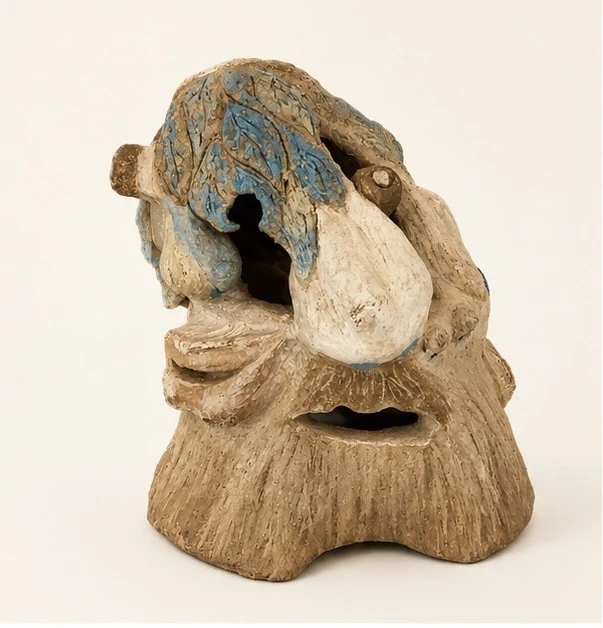
虛實之間：洞口、臉孔與葉狀紋理交疊在一起，像真實的身體正在讓看不見的內在露出來。 Between Virtual and Real: openings, faces, and leaf-like textures overlap, as if a real body were revealing the unseen interior.
進入 Enter系列一 Series 1
在世界留下的石紋、木紋、舊牆與海岸痕跡中，我看見尚未成形的生命線索。當這些痕跡進入觀看，與想像和線條相遇，生命便逐漸顯現。 Within stone patterns, wood grain, old walls, and coastal traces, I begin to see unformed hints of life. As these traces enter seeing and meet imagination and line, life gradually emerges.
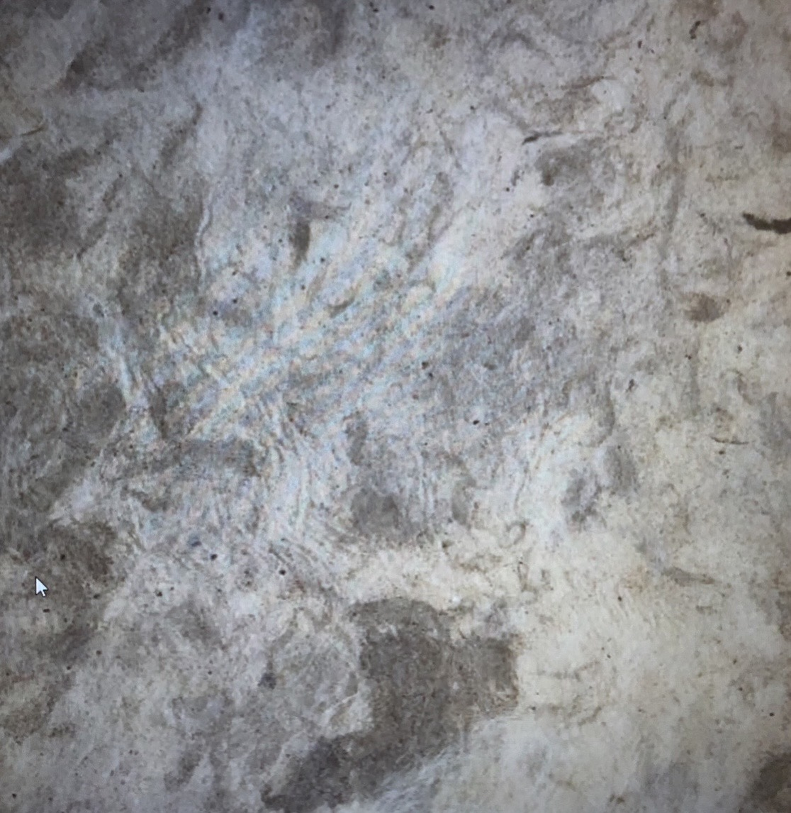
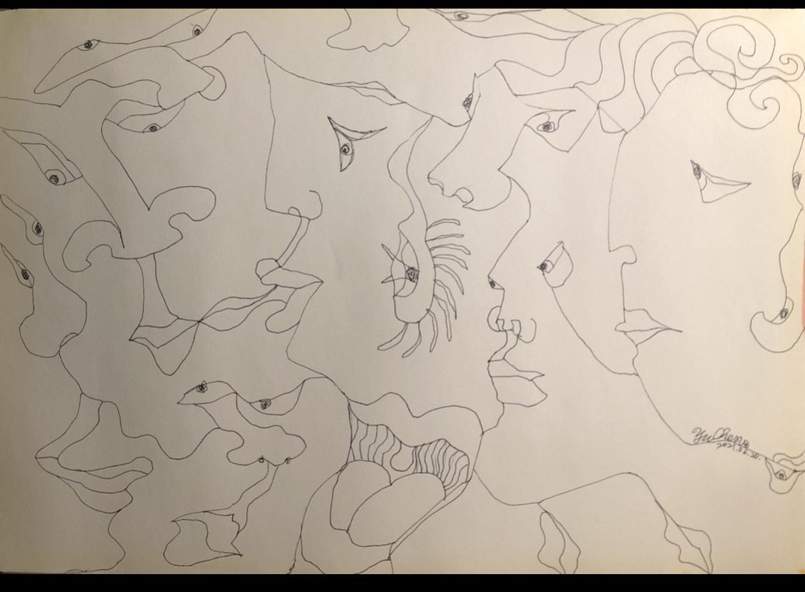
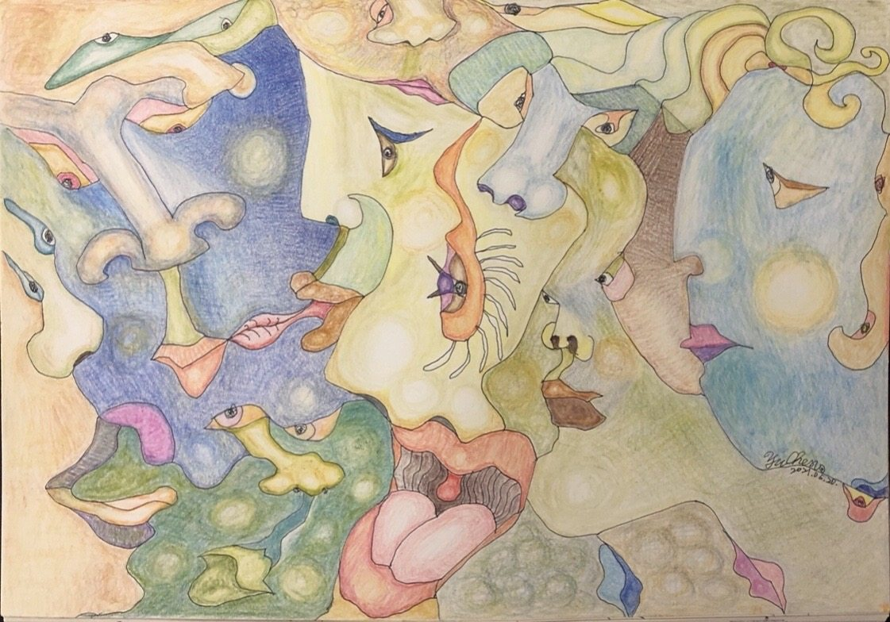
遠古的傳說：石板紋理中的線索，在觀看與線條之間逐漸成形；眼睛與面孔像遠古記號般慢慢顯現。 Ancient Legend: hints within the stone texture gradually take form through seeing and line; eyes and faces slowly emerge like ancient signs.
進入 Enter系列二 Series 2
文明不是被完整復原，而是在殘片、裂縫與時間的沉積中，經由觀看、想像與陶土，逐漸生成新的生命形態。 Civilization is not fully restored. Within fragments, cracks, and sediments of time, new forms of life gradually emerge through seeing, imagination, and clay.
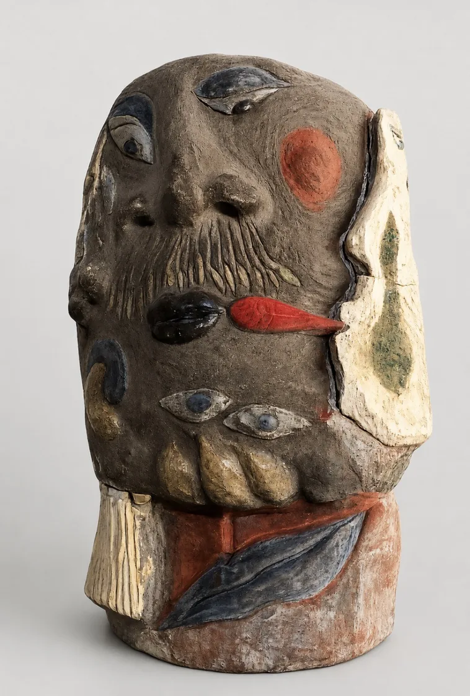
文明留下的殘影，在裂縫與陶土之間逐漸成形。 Traces of civilization gradually take form between cracks and clay.
進入 Enter系列三 Series 3
陶土不只是承載生命的容器，而是與雙手、觸覺、動作與想像一起參與生成的身體。從早期依循線稿的再創作，到後來逐漸放開既定形象，形體常常先於命名出現；眼睛、嘴巴、孔洞與曲面，也在捏塑與偶然之間慢慢長成可以凝視、呼吸與回應的生命。 Clay is not merely a vessel that holds life, but a body that takes part in its emergence together with the hands, touch, movement, and imagination. From early re-creations guided by drawings to later forms made with fewer predetermined images, form often appears before it is named; eyes, mouths, openings, and curves gradually grow through shaping and chance into lives that can gaze, breathe, and respond.
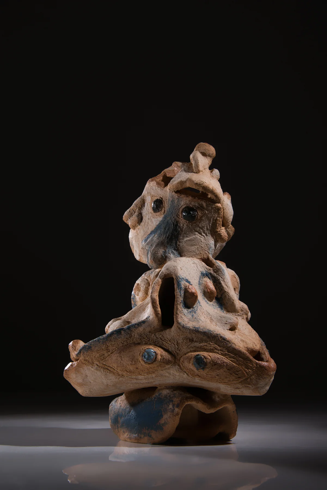
心生相：一件由閉眼、凝視與張口交疊而成的生命容器，像內心深處長出的形相，把尚未說出的靈魂顯影出來。 Inner Form: a life vessel where closed eyes, gaze, and an open mouth overlap, revealing a soul that has not yet spoken.
進入 Enter系列四 Series 4
人格不是固定的面孔，也不是最後被挖出的一個真正自我；它在自我、角色、記憶與生命經驗之間持續形成。一個形體可以容納多張臉、多個角色、多重觀看方向與內在層次，像一層仍在生成、仍可被重新閱讀的人格地層。 Persona is not a fixed face, nor a single true self waiting to be uncovered. It continues to take shape among self, roles, memory, and lived experience. One form can hold many faces, many roles, multiple directions of seeing, and inner layers, like a living stratum of persona that is still forming and open to reinterpretation.
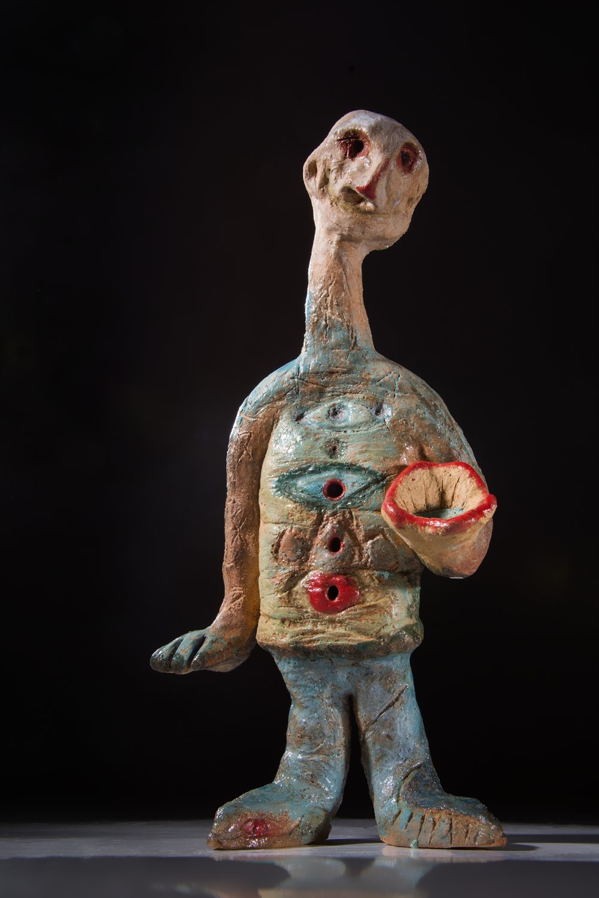
來自視界之外：一個從視界之外走來的自我分身，帶著眼睛、孔洞與張開的口器接收世界，也向世界發出內在的聲音。 A persona arriving from beyond the field of vision, receiving the world while sending out an inner voice.
進入 Enter系列五 Series 5
線條生成，是「生形」的開始：雙手先行，形體先於命名。我的線不是在描繪世界，而是在決定世界從哪裡開始；「又」不是簽名，而是生命生成的起點。當連續線開始流動、轉折與相遇，多重生命便在同一條線中逐漸顯現。 Line Generation begins with the emergence of form: the hands move first, and form appears before it is named. My line does not depict the world; it decides where the world begins. The character “又” is not a signature, but the starting point from which life begins to emerge. As continuous lines flow, turn, and meet, multiple lives gradually emerge within the same line.
05 / 早期創作 Early Works
早期創作像整個又禎宇宙最初的地層：紙面、木材與空間在這裡第一次彼此靠近。 The early works are the first strata of the Yuzen Universe: paper, wood, and space first come close to one another here.
我曾經想用作品，證明自己來過。
I once wanted my work to prove that I had been here.
後來才明白，存在不需要證明。
Only later did I understand that existence needs no proof.
我創作，我存在。
I create. I am.
創作即生命。
Creation is Life.
06 / 展歷 Exhibitions & Awards
07 / 聯絡資訊 Contact Info